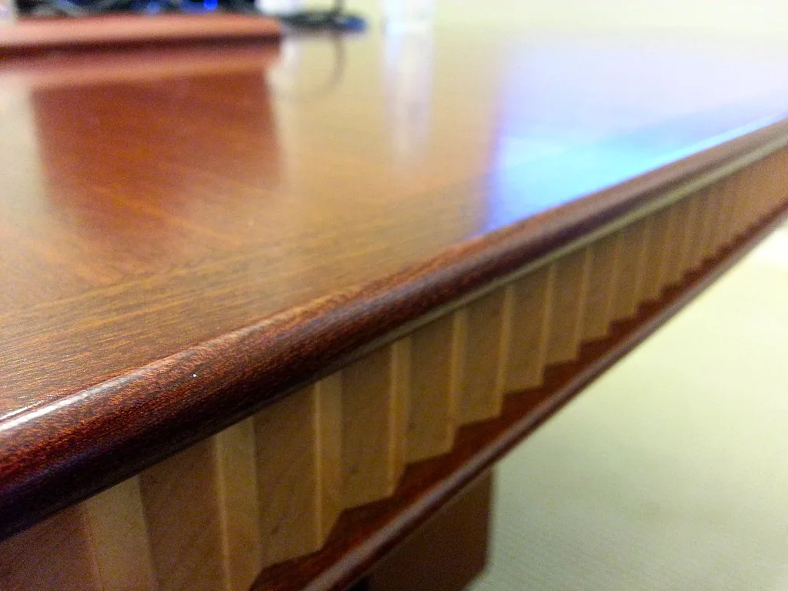

이재명 대통령 순방 마치고 귀국…4~5일 27개 기관 업무보고 재개
미국·남미 3개국 순방 일정을 마친 이재명 대통령이 3일 귀국했다. 대통령은 귀국 직후 곧바로 업무에 복귀해 부동산 정책과 주식시장 등 국내 경제 현안을 점검하는 비공개 회의를 가진 것으로 전해졌다. 순방 기간 국내 정책 추진 일정이 다소 미뤄졌던 만큼, 귀국 즉시 국정 현안을 다시 챙기며 속도감 있게 국정 드라이브를 이어가려는 행보로 풀이된다. 대통령실은 이번 순방에서 다뤄진 통상·외교 성과를 국내 정책과 연계해 조속히 후속 조치에 나서겠다는 방침을 밝힌 바 있다.
대통령은 귀국 다음 날인 4일부터 이틀에 걸쳐 총 27개 부처·기관으로부터 업무보고를 받을 예정이다. 4일에는 오후 2시부터 산업통상부, 지식재산처, 기후에너지부, 기상청, 원자력안전위원회가 순서대로 업무보고를 하고, 이어 오후 4시 20분부터는 고용노동부와 중소벤처기업부, 공정거래위원회가 보고에 나선다. 산업·에너지·노동 등 경제 전반에 걸친 부처들이 하루에 집중적으로 보고를 마치는 일정이다.

5일에는 외교·안보 분야와 사회 각 분야를 아우르는 더 많은 기관이 보고 대상에 오른다. 오전 10시에는 외교부, 재외동포청, 통일부, 국방부, 병무청, 방위사업청, 국가보훈부가 함께 업무보고를 하고, 오후 2시부터는 교육부, 국가교육위원회, 문화체육관광부, 국가유산청이 뒤를 잇는다. 오후 4시 20분부터는 행정안전부, 경찰청, 소방청, 인사혁신처, 법무부, 검찰청, 법제처, 국무조정실까지 여덟 개 기관이 한 세션에서 보고를 진행할 예정이어서, 하루 동안 다뤄지는 의제의 폭이 상당히 넓다는 평가가 나온다.
이번 업무보고는 앞서 대통령의 해외 순방 일정으로 미뤄졌던 국정과제 추진 상황과 민생 현안을 종합적으로 점검하는 자리로 마련됐다. 특히 산업·외교·안보·법무 등 그동안 순방 준비와 일정에 밀려 상대적으로 논의가 더뎠던 분야의 정책 추진 상황을 재점검하는 데 무게가 실릴 것으로 보인다. 대통령실 관계자는 순방을 통해 확인한 대외 여건 변화를 각 부처의 정책 방향에 신속히 반영하는 것이 이번 보고의 핵심 목표라고 설명한 것으로 알려졌다.

귀국 직후 열린 부동산·주식시장 관련 비공개 회의도 관심을 모은다. 정부는 그동안 여러 차례 공개토론회를 거쳐 부동산 세제 개편 방향을 다듬어 왔으며, 실거주자 보호와 초고가·비주거용 부동산에 대한 과세 강화를 축으로 한 종합대책을 이른 시일 내 발표할 계획인 것으로 알려져 있다. 이번 회의에서 순방 기간 있었던 국내 시장 동향까지 함께 점검하면서, 관련 정책 발표 시점과 세부 내용을 조율했을 가능성이 제기된다.
정치권과 관가에서는 이번 연쇄 업무보고를 계기로 하반기 국정 운영의 우선순위가 어떻게 재조정될지 주목하고 있다. 순방을 통한 대외 성과를 뒷받침할 국내 정책 정비가 시급하다는 인식 속에, 산업·에너지 정책과 외교·안보 현안, 부동산·물가 등 민생 과제가 동시에 논의 테이블에 오르는 만큼 후속 발표가 잇따를 것이라는 전망이 나온다. 각 부처는 이번 보고를 계기로 하반기 세부 실행 계획을 구체화해 순차적으로 공개할 예정인 것으로 전해졌다. 이틀에 걸친 보고 일정이 마무리되는 대로 대통령실은 부처별 핵심 과제를 정리해 별도의 종합 브리핑을 여는 방안도 검토하고 있는 것으로 알려졌다.